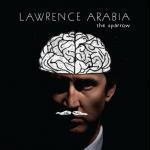
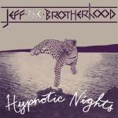

Music Reviews
-

Lawrence Arabia The Sparrow
James Milne's third outing as Lawrence Arabia proves his talents as a portentous pop classicist who likes to dress the part of the tortured gentleman through a low simmer of cinereous chamber arrangements.
Juan Edgardo Rodríguez combs his hair back... -

Chromatics Kill for Love
Perhaps now best known for his contributions to Drive, the latest album bearing Johnny Jewel's signature is unsurprisingly designed for playing when driving down nocturnal, deserted roads. Although running to 90 minutes, it really isn't in a hurry to get anywhere.
Mark Davison is using that as an excuse for this review's lateness... -
OM Advaitic Songs
Advaitic Songs is the second Grails album by OM. That’s an endorsement, by the way.
Sean Caldwell reviews... -
Laetitia Sadier Silencio
As Laetitia Sadier relies more and more on the success of her past band, she fails to realize that you need to eventually produce something new and creative for your fans to hear.
Joshua Pickard turns off Emperor Tomato Ketchup to review... -

Orbital Wonky
Dance music veterans return with their 8th album following a comeback tour. It's like they never went away.
David John Wood relives his dancing days... -

JEFF the Brotherhood Hypnotic Nights
The Nashville sibling duo make the jump to the major leagues with Hypnotic Nights, a fuzzed-out, dumb and fun effort that avoids any significant advancements in songcraft to reincorporate their moniker to a wider audience and prove that they are still as daffy as when they started.
Juan Edgardo Rodríguez goes whoa oh oh... -

Dirty Projectors Swing Lo Magellan
Dirty Projectors' new album is less demanding than their previous work, but equally rewarding - and in short, it redefines their musical genius once again.
Stephen Wragg reviews... -
Mission of Burma Unsound
The born-again rockers cement their status with their first record on Fire Records.
Forrest Cardamenis reaches for his... -
Eternal Summers Correct Behaviour
The second LP from former Roanoke, VA, duo now trio (they added a bass player) is as a consequence sonically more interesting, emotionally more encapsulating and confrontationally direct.
Matt Bevington reviews... -

Fiona Apple The Idler Wheel Is Wiser Than The Driver Of The Screw And Whipping Cords Will Serve You More Than Ropes Will Ever Do
The Idler Wheel, Fiona Apple's return after seven years, is a sparse, yet scintillating effort that never holds back in pursuit of bringing big emotions to the fore.
Juan Edgardo Rodríguez reviews...